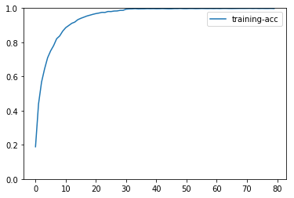
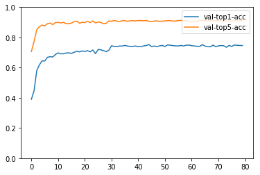

ERROR:root:Invalid alias: The name clear can't be aliased because it is another magic command.
ERROR:root:Invalid alias: The name more can't be aliased because it is another magic command.
ERROR:root:Invalid alias: The name less can't be aliased because it is another magic command.
ERROR:root:Invalid alias: The name man can't be aliased because it is another magic command.
In [1]: runfile('/home/hp/lcx/Action-Recognition/test_mseloss.py', wdir='/home/hp/lcx/Action-Recognition')
Load 9537 training samples.
[20:29:50] src/operator/nn/./cudnn/./cudnn_algoreg-inl.h:97: Running performance tests to find the best convolution algorithm, this can take a while... (set the environment variable MXNET_CUDNN_AUTOTUNE_DEFAULT to 0 to disable)
Traceback (most recent call last):
File "<ipython-input-1-146a4ac7b624>", line 1, in <module>
runfile('/home/hp/lcx/Action-Recognition/test_mseloss.py', wdir='/home/hp/lcx/Action-Recognition')
File "/home/hp/.local/lib/python3.5/site-packages/spyder_kernels/customize/spydercustomize.py", line 827, in runfile
execfile(filename, namespace)
File "/home/hp/.local/lib/python3.5/site-packages/spyder_kernels/customize/spydercustomize.py", line 110, in execfile
exec(compile(f.read(), filename, 'exec'), namespace)
File "/home/hp/lcx/Action-Recognition/test_mseloss.py", line 225, in <module>
acc_top1_val, acc_top5_val, loss_val = test(ctx, val_data)
File "/home/hp/lcx/Action-Recognition/test_mseloss.py", line 169, in test
loss = [L(mymean(yhat), y) for yhat, y in zip(val_outputs, label)]
File "/home/hp/lcx/Action-Recognition/test_mseloss.py", line 169, in <listcomp>
loss = [L(mymean(yhat), y) for yhat, y in zip(val_outputs, label)]
File "/home/hp/.local/lib/python3.5/site-packages/mxnet/gluon/block.py", line 548, in __call__
out = self.forward(*args)
File "/home/hp/.local/lib/python3.5/site-packages/mxnet/gluon/block.py", line 929, in forward
"Symbol or NDArray, but got %s"%type(x)
AssertionError: HybridBlock requires the first argument to forward be either Symbol or NDArray, but got <class 'list'>
In [2]:
Caching the list of root modules, please wait!
(This will only be done once - type '%rehashx' to reset cache!)
In [2]: from mxnxet import mx
Traceback (most recent call last):
File "<ipython-input-2-6d0b45207723>", line 1, in <module>
from mxnxet import mx
ImportError: No module named 'mxnxet'
In [3]:
In [3]: from mxnxet import nd
Traceback (most recent call last):
File "<ipython-input-3-95509d3e452a>", line 1, in <module>
from mxnxet import nd
ImportError: No module named 'mxnxet'
In [4]:
In [4]: from mxnet import nd
In [5]: a = [nd.ones(shape=(3))*x for x in range(4) ]
In [6]: a
Out[6]:
[
[0. 0. 0.]
<NDArray 3 @cpu(0)>,
[1. 1. 1.]
<NDArray 3 @cpu(0)>,
[2. 2. 2.]
<NDArray 3 @cpu(0)>,
[3. 3. 3.]
<NDArray 3 @cpu(0)>]
In [7]: nd.mean(a)
Traceback (most recent call last):
File "<ipython-input-7-70d5970829b6>", line 1, in <module>
nd.mean(a)
File "<string>", line 44, in mean
AssertionError: Argument data must have NDArray type, but got [
[0. 0. 0.]
<NDArray 3 @cpu(0)>,
[1. 1. 1.]
<NDArray 3 @cpu(0)>,
[2. 2. 2.]
<NDArray 3 @cpu(0)>,
[3. 3. 3.]
<NDArray 3 @cpu(0)>]
In [8]:
In [8]: import numpy as np
In [9]: np.mean(a)
Traceback (most recent call last):
File "<ipython-input-9-bb73b68b76e2>", line 1, in <module>
np.mean(a)
File "<__array_function__ internals>", line 6, in mean
File "/home/hp/.local/lib/python3.5/site-packages/numpy/core/fromnumeric.py", line 3257, in mean
out=out, **kwargs)
File "/home/hp/.local/lib/python3.5/site-packages/numpy/core/_methods.py", line 161, in _mean
ret = ret.dtype.type(ret / rcount)
AttributeError: type object 'numpy.float32' has no attribute 'type'
In [10]:
In [10]: runfile('/home/hp/lcx/Action-Recognition/test_mseloss.py', wdir='/home/hp/lcx/Action-Recognition')
Reloaded modules: model_zoo, model_zoo.simple, model_zoo.model_zoo, model_zoo.MSEloss_vgg
Load 9537 training samples.
[Epoch 0] train=0.188634 loss=11.844415 time: 1103.057596
[Epoch 0] val top1 =0.390167 top5=0.706582 val loss=2.902699
[Epoch 1] train=0.439027 loss=9.177753 time: 1011.922485
[Epoch 1] val top1 =0.447264 top5=0.773725 val loss=2.448754
[Epoch 2] train=0.567369 loss=7.848829 time: 965.814109
[Epoch 2] val top1 =0.579699 top5=0.850912 val loss=2.066048
[Epoch 3] train=0.644228 loss=6.959026 time: 923.230600
[Epoch 3] val top1 =0.618557 top5=0.870738 val loss=1.896066
[Epoch 4] train=0.709343 loss=6.257764 time: 936.635650
[Epoch 4] val top1 =0.644462 top5=0.881575 val loss=1.752793
[Epoch 5] train=0.749712 loss=5.739083 time: 895.764844
[Epoch 5] val top1 =0.643669 top5=0.876289 val loss=1.714827
[Epoch 6] train=0.780854 loss=5.311666 time: 838.586086
[Epoch 6] val top1 =0.668253 top5=0.890827 val loss=1.609006
[Epoch 7] train=0.820908 loss=4.901411 time: 814.546622
[Epoch 7] val top1 =0.672218 top5=0.895057 val loss=1.560098
[Epoch 8] train=0.837161 loss=4.633567 time: 792.358932
[Epoch 8] val top1 =0.670367 top5=0.884748 val loss=1.550603
[Epoch 9] train=0.865262 loss=4.318321 time: 757.525487
[Epoch 9] val top1 =0.686757 top5=0.897965 val loss=1.488982
[Epoch 10] train=0.885708 loss=4.036339 time: 760.012586
[Epoch 10] val top1 =0.697330 top5=0.899815 val loss=1.471207
[Epoch 11] train=0.898291 loss=3.881433 time: 719.598376
[Epoch 11] val top1 =0.691250 top5=0.895586 val loss=1.450409
[00:03:46] src/engine/threaded_engine_perdevice.cc:99: Ignore CUDA Error [00:03:46] /home/travis/build/dmlc/mxnet-distro/mxnet-build/3rdparty/mshadow/mshadow/./tensor_gpu-inl.h:35: Check failed: e == cudaSuccess: CUDA: initialization error
Stack trace:
[bt] (0) /home/hp/.local/lib/python3.5/site-packages/mxnet/libmxnet.so(+0x4a148b) [0x7f6ceba9348b]
[bt] (1) /home/hp/.local/lib/python3.5/site-packages/mxnet/libmxnet.so(+0x265ae82) [0x7f6cedc4ce82]
[bt] (2) /home/hp/.local/lib/python3.5/site-packages/mxnet/libmxnet.so(+0x26675ae) [0x7f6cedc595ae]
[bt] (3) /home/hp/.local/lib/python3.5/site-packages/mxnet/libmxnet.so(+0x265075e) [0x7f6cedc4275e]
[bt] (4) /home/hp/.local/lib/python3.5/site-packages/mxnet/libmxnet.so(+0x26516a4) [0x7f6cedc436a4]
[bt] (5) /home/hp/.local/lib/python3.5/site-packages/mxnet/libmxnet.so(mxnet::NDArray::Chunk::~Chunk()+0x48a) [0x7f6cede4419a]
[bt] (6) /home/hp/.local/lib/python3.5/site-packages/mxnet/libmxnet.so(+0x4a4d8a) [0x7f6ceba96d8a]
[bt] (7) /home/hp/.local/lib/python3.5/site-packages/mxnet/libmxnet.so(MXNDArrayFree+0x54) [0x7f6cedbbdbb4]
[bt] (8) /usr/lib/python3.5/lib-dynload/_ctypes.cpython-35m-x86_64-linux-gnu.so(ffi_call_unix64+0x4c) [0x7f6d48eb1e20]
[00:03:46] src/engine/threaded_engine_perdevice.cc:99: Ignore CUDA Error [00:03:46] /home/travis/build/dmlc/mxnet-distro/mxnet-build/3rdparty/mshadow/mshadow/./tensor_gpu-inl.h:35: Check failed: e == cudaSuccess: CUDA: initialization error
Stack trace:
[bt] (0) /home/hp/.local/lib/python3.5/site-packages/mxnet/libmxnet.so(+0x4a148b) [0x7f6ceba9348b]
[bt] (1) /home/hp/.local/lib/python3.5/site-packages/mxnet/libmxnet.so(+0x265ae82) [0x7f6cedc4ce82]
[bt] (2) /home/hp/.local/lib/python3.5/site-packages/mxnet/libmxnet.so(+0x26675ae) [0x7f6cedc595ae]
[bt] (3) /home/hp/.local/lib/python3.5/site-packages/mxnet/libmxnet.so(+0x265075e) [0x7f6cedc4275e]
[bt] (4) /home/hp/.local/lib/python3.5/site-packages/mxnet/libmxnet.so(+0x26516a4) [0x7f6cedc436a4]
[bt] (5) /home/hp/.local/lib/python3.5/site-packages/mxnet/libmxnet.so(mxnet::NDArray::Chunk::~Chunk()+0x48a) [0x7f6cede4419a]
[bt] (6) /home/hp/.local/lib/python3.5/site-packages/mxnet/libmxnet.so(+0x4a4d8a) [0x7f6ceba96d8a]
[bt] (7) /home/hp/.local/lib/python3.5/site-packages/mxnet/libmxnet.so(MXNDArrayFree+0x54) [0x7f6cedbbdbb4]
[bt] (8) /usr/lib/python3.5/lib-dynload/_ctypes.cpython-35m-x86_64-linux-gnu.so(ffi_call_unix64+0x4c) [0x7f6d48eb1e20]
[00:03:46] src/engine/threaded_engine_perdevice.cc:99: Ignore CUDA Error [00:03:46] /home/travis/build/dmlc/mxnet-distro/mxnet-build/3rdparty/mshadow/mshadow/./tensor_gpu-inl.h:35: Check failed: e == cudaSuccess: CUDA: initialization error
Stack trace:
[bt] (0) /home/hp/.local/lib/python3.5/site-packages/mxnet/libmxnet.so(+0x4a148b) [0x7f6ceba9348b]
[bt] (1) /home/hp/.local/lib/python3.5/site-packages/mxnet/libmxnet.so(+0x265ae82) [0x7f6cedc4ce82]
[bt] (2) /home/hp/.local/lib/python3.5/site-packages/mxnet/libmxnet.so(+0x26675ae) [0x7f6cedc595ae]
[bt] (3) /home/hp/.local/lib/python3.5/site-packages/mxnet/libmxnet.so(+0x265075e) [0x7f6cedc4275e]
[bt] (4) /home/hp/.local/lib/python3.5/site-packages/mxnet/libmxnet.so(+0x26516a4) [0x7f6cedc436a4]
[bt] (5) /home/hp/.local/lib/python3.5/site-packages/mxnet/libmxnet.so(mxnet::NDArray::Chunk::~Chunk()+0x48a) [0x7f6cede4419a]
[bt] (6) /home/hp/.local/lib/python3.5/site-packages/mxnet/libmxnet.so(+0x4a4d8a) [0x7f6ceba96d8a]
[bt] (7) /home/hp/.local/lib/python3.5/site-packages/mxnet/libmxnet.so(MXNDArrayFree+0x54) [0x7f6cedbbdbb4]
[bt] (8) /usr/lib/python3.5/lib-dynload/_ctypes.cpython-35m-x86_64-linux-gnu.so(ffi_call_unix64+0x4c) [0x7f6d48eb1e20]
[00:03:46] src/engine/threaded_engine_perdevice.cc:99: Ignore CUDA Error [00:03:46] /home/travis/build/dmlc/mxnet-distro/mxnet-build/3rdparty/mshadow/mshadow/./tensor_gpu-inl.h:35: Check failed: e == cudaSuccess: CUDA: initialization error
Stack trace:
[bt] (0) /home/hp/.local/lib/python3.5/site-packages/mxnet/libmxnet.so(+0x4a148b) [0x7f6ceba9348b]
[bt] (1) /home/hp/.local/lib/python3.5/site-packages/mxnet/libmxnet.so(+0x265ae82) [0x7f6cedc4ce82]
[bt] (2) /home/hp/.local/lib/python3.5/site-packages/mxnet/libmxnet.so(+0x26675ae) [0x7f6cedc595ae]
[bt] (3) /home/hp/.local/lib/python3.5/site-packages/mxnet/libmxnet.so(+0x265075e) [0x7f6cedc4275e]
[bt] (4) /home/hp/.local/lib/python3.5/site-packages/mxnet/libmxnet.so(+0x26516a4) [0x7f6cedc436a4]
[bt] (5) /home/hp/.local/lib/python3.5/site-packages/mxnet/libmxnet.so(mxnet::NDArray::Chunk::~Chunk()+0x48a) [0x7f6cede4419a]
[bt] (6) /home/hp/.local/lib/python3.5/site-packages/mxnet/libmxnet.so(+0x4a4d8a) [0x7f6ceba96d8a]
[bt] (7) /home/hp/.local/lib/python3.5/site-packages/mxnet/libmxnet.so(MXNDArrayFree+0x54) [0x7f6cedbbdbb4]
[bt] (8) /usr/lib/python3.5/lib-dynload/_ctypes.cpython-35m-x86_64-linux-gnu.so(ffi_call_unix64+0x4c) [0x7f6d48eb1e20]
[00:03:46] src/engine/threaded_engine_perdevice.cc:99: Ignore CUDA Error [00:03:46] /home/travis/build/dmlc/mxnet-distro/mxnet-build/3rdparty/mshadow/mshadow/./tensor_gpu-inl.h:35: Check failed: e == cudaSuccess: CUDA: initialization error
Stack trace:
[bt] (0) /home/hp/.local/lib/python3.5/site-packages/mxnet/libmxnet.so(+0x4a148b) [0x7f6ceba9348b]
[bt] (1) /home/hp/.local/lib/python3.5/site-packages/mxnet/libmxnet.so(+0x265ae82) [0x7f6cedc4ce82]
[bt] (2) /home/hp/.local/lib/python3.5/site-packages/mxnet/libmxnet.so(+0x26675ae) [0x7f6cedc595ae]
[bt] (3) /home/hp/.local/lib/python3.5/site-packages/mxnet/libmxnet.so(+0x265075e) [0x7f6cedc4275e]
[bt] (4) /home/hp/.local/lib/python3.5/site-packages/mxnet/libmxnet.so(+0x26516a4) [0x7f6cedc436a4]
[bt] (5) /home/hp/.local/lib/python3.5/site-packages/mxnet/libmxnet.so(mxnet::NDArray::Chunk::~Chunk()+0x48a) [0x7f6cede4419a]
[bt] (6) /home/hp/.local/lib/python3.5/site-packages/mxnet/libmxnet.so(+0x4a4d8a) [0x7f6ceba96d8a]
[bt] (7) /home/hp/.local/lib/python3.5/site-packages/mxnet/libmxnet.so(MXNDArrayFree+0x54) [0x7f6cedbbdbb4]
[bt] (8) /usr/lib/python3.5/lib-dynload/_ctypes.cpython-35m-x86_64-linux-gnu.so(ffi_call_unix64+0x4c) [0x7f6d48eb1e20]
[00:03:46] src/engine/threaded_engine_perdevice.cc:99: Ignore CUDA Error [00:03:46] /home/travis/build/dmlc/mxnet-distro/mxnet-build/3rdparty/mshadow/mshadow/./tensor_gpu-inl.h:35: Check failed: e == cudaSuccess: CUDA: initialization error
Stack trace:
[bt] (0) /home/hp/.local/lib/python3.5/site-packages/mxnet/libmxnet.so(+0x4a148b) [0x7f6ceba9348b]
[bt] (1) /home/hp/.local/lib/python3.5/site-packages/mxnet/libmxnet.so(+0x265ae82) [0x7f6cedc4ce82]
[bt] (2) /home/hp/.local/lib/python3.5/site-packages/mxnet/libmxnet.so(+0x26675ae) [0x7f6cedc595ae]
[bt] (3) /home/hp/.local/lib/python3.5/site-packages/mxnet/libmxnet.so(+0x265075e) [0x7f6cedc4275e]
[bt] (4) /home/hp/.local/lib/python3.5/site-packages/mxnet/libmxnet.so(+0x26516a4) [0x7f6cedc436a4]
[bt] (5) /home/hp/.local/lib/python3.5/site-packages/mxnet/libmxnet.so(mxnet::NDArray::Chunk::~Chunk()+0x48a) [0x7f6cede4419a]
[bt] (6) /home/hp/.local/lib/python3.5/site-packages/mxnet/libmxnet.so(+0x4a4d8a) [0x7f6ceba96d8a]
[bt] (7) /home/hp/.local/lib/python3.5/site-packages/mxnet/libmxnet.so(MXNDArrayFree+0x54) [0x7f6cedbbdbb4]
[bt] (8) /usr/lib/python3.5/lib-dynload/_ctypes.cpython-35m-x86_64-linux-gnu.so(ffi_call_unix64+0x4c) [0x7f6d48eb1e20]
[00:03:46] src/engine/threaded_engine_perdevice.cc:99: Ignore CUDA Error [00:03:46] /home/travis/build/dmlc/mxnet-distro/mxnet-build/3rdparty/mshadow/mshadow/./tensor_gpu-inl.h:35: Check failed: e == cudaSuccess: CUDA: initialization error
Stack trace:
[bt] (0) /home/hp/.local/lib/python3.5/site-packages/mxnet/libmxnet.so(+0x4a148b) [0x7f6ceba9348b]
[bt] (1) /home/hp/.local/lib/python3.5/site-packages/mxnet/libmxnet.so(+0x265ae82) [0x7f6cedc4ce82]
[bt] (2) /home/hp/.local/lib/python3.5/site-packages/mxnet/libmxnet.so(+0x26675ae) [0x7f6cedc595ae]
[bt] (3) /home/hp/.local/lib/python3.5/site-packages/mxnet/libmxnet.so(+0x265075e) [0x7f6cedc4275e]
[bt] (4) /home/hp/.local/lib/python3.5/site-packages/mxnet/libmxnet.so(+0x26516a4) [0x7f6cedc436a4]
[bt] (5) /home/hp/.local/lib/python3.5/site-packages/mxnet/libmxnet.so(mxnet::NDArray::Chunk::~Chunk()+0x48a) [0x7f6cede4419a]
[bt] (6) /home/hp/.local/lib/python3.5/site-packages/mxnet/libmxnet.so(+0x4a4d8a) [0x7f6ceba96d8a]
[bt] (7) /home/hp/.local/lib/python3.5/site-packages/mxnet/libmxnet.so(MXNDArrayFree+0x54) [0x7f6cedbbdbb4]
[bt] (8) /usr/lib/python3.5/lib-dynload/_ctypes.cpython-35m-x86_64-linux-gnu.so(ffi_call_unix64+0x4c) [0x7f6d48eb1e20]
[00:03:46] src/engine/threaded_engine_perdevice.cc:99: Ignore CUDA Error [00:03:46] /home/travis/build/dmlc/mxnet-distro/mxnet-build/3rdparty/mshadow/mshadow/./tensor_gpu-inl.h:35: Check failed: e == cudaSuccess: CUDA: initialization error
Stack trace:
[bt] (0) /home/hp/.local/lib/python3.5/site-packages/mxnet/libmxnet.so(+0x4a148b) [0x7f6ceba9348b]
[bt] (1) /home/hp/.local/lib/python3.5/site-packages/mxnet/libmxnet.so(+0x265ae82) [0x7f6cedc4ce82]
[bt] (2) /home/hp/.local/lib/python3.5/site-packages/mxnet/libmxnet.so(+0x26675ae) [0x7f6cedc595ae]
[bt] (3) /home/hp/.local/lib/python3.5/site-packages/mxnet/libmxnet.so(+0x265075e) [0x7f6cedc4275e]
[bt] (4) /home/hp/.local/lib/python3.5/site-packages/mxnet/libmxnet.so(+0x26516a4) [0x7f6cedc436a4]
[bt] (5) /home/hp/.local/lib/python3.5/site-packages/mxnet/libmxnet.so(mxnet::NDArray::Chunk::~Chunk()+0x48a) [0x7f6cede4419a]
[bt] (6) /home/hp/.local/lib/python3.5/site-packages/mxnet/libmxnet.so(+0x4a4d8a) [0x7f6ceba96d8a]
[bt] (7) /home/hp/.local/lib/python3.5/site-packages/mxnet/libmxnet.so(MXNDArrayFree+0x54) [0x7f6cedbbdbb4]
[bt] (8) /usr/lib/python3.5/lib-dynload/_ctypes.cpython-35m-x86_64-linux-gnu.so(ffi_call_unix64+0x4c) [0x7f6d48eb1e20]
[Epoch 12] train=0.911083 loss=3.646724 time: 667.049787
[Epoch 12] val top1 =0.691250 top5=0.899286 val loss=1.467391
[Epoch 13] train=0.918318 loss=3.492101 time: 656.631191
[Epoch 13] val top1 =0.696801 top5=0.891620 val loss=1.422580
[Epoch 14] train=0.932474 loss=3.308641 time: 624.737554
[Epoch 14] val top1 =0.697595 top5=0.890563 val loss=1.430864
[Epoch 15] train=0.940442 loss=3.120948 time: 611.650274
[Epoch 15] val top1 =0.694422 top5=0.894264 val loss=1.438874
[Epoch 16] train=0.947048 loss=3.050714 time: 614.476795
[Epoch 16] val top1 =0.701295 top5=0.904573 val loss=1.379598
[Epoch 17] train=0.953864 loss=2.902936 time: 592.726569
[Epoch 17] val top1 =0.708432 top5=0.907481 val loss=1.314872
[Epoch 18] train=0.958792 loss=2.806492 time: 554.159400
[Epoch 18] val top1 =0.703939 top5=0.894264 val loss=1.383538
[Epoch 19] train=0.963825 loss=2.651858 time: 546.896660
[Epoch 19] val top1 =0.710283 top5=0.899551 val loss=1.372230
[Epoch 20] train=0.968124 loss=2.610742 time: 569.293813
[Epoch 20] val top1 =0.706582 top5=0.897965 val loss=1.348727
[Epoch 21] train=0.971270 loss=2.521415 time: 569.618014
[Epoch 21] val top1 =0.712398 top5=0.907481 val loss=1.333703
[Epoch 22] train=0.975359 loss=2.416471 time: 513.298041
[Epoch 22] val top1 =0.704203 top5=0.897436 val loss=1.354200
[Epoch 23] train=0.974835 loss=2.401193 time: 501.547234
[Epoch 23] val top1 =0.716627 top5=0.909596 val loss=1.329765
[Epoch 24] train=0.980497 loss=2.285115 time: 525.281753
[Epoch 24] val top1 =0.692308 top5=0.895850 val loss=1.378457
[Epoch 25] train=0.979973 loss=2.232012 time: 484.739933
[Epoch 25] val top1 =0.720063 top5=0.901665 val loss=1.306356
[Epoch 26] train=0.983014 loss=2.135674 time: 496.247137
[Epoch 26] val top1 =0.717684 top5=0.898758 val loss=1.335056
[Epoch 27] train=0.983538 loss=2.099476 time: 508.563056
[Epoch 27] val top1 =0.712133 top5=0.890563 val loss=1.379195
[Epoch 28] train=0.986998 loss=2.065520 time: 463.881829
[Epoch 28] val top1 =0.705789 top5=0.893206 val loss=1.366902
[Epoch 29] train=0.987313 loss=1.993586 time: 483.030799
[Epoch 29] val top1 =0.715305 top5=0.908803 val loss=1.319963
[Epoch 30] train=0.994023 loss=1.806906 time: 463.776297
[Epoch 30] val top1 =0.744911 top5=0.906952 val loss=1.243732
[Epoch 31] train=0.995282 loss=1.741045 time: 459.195510
[Epoch 31] val top1 =0.740153 top5=0.912503 val loss=1.236980
[Epoch 32] train=0.995596 loss=1.718810 time: 455.453339
[Epoch 32] val top1 =0.739625 top5=0.907745 val loss=1.231901
[Epoch 33] train=0.996854 loss=1.691281 time: 436.988339
[Epoch 33] val top1 =0.742797 top5=0.905630 val loss=1.235455
[03:18:50] src/engine/threaded_engine_perdevice.cc:99: Ignore CUDA Error [03:18:50] /home/travis/build/dmlc/mxnet-distro/mxnet-build/3rdparty/mshadow/mshadow/./tensor_gpu-inl.h:35: Check failed: e == cudaSuccess: CUDA: initialization error
Stack trace:
[bt] (0) /home/hp/.local/lib/python3.5/site-packages/mxnet/libmxnet.so(+0x4a148b) [0x7f6ceba9348b]
[bt] (1) /home/hp/.local/lib/python3.5/site-packages/mxnet/libmxnet.so(+0x265ae82) [0x7f6cedc4ce82]
[bt] (2) /home/hp/.local/lib/python3.5/site-packages/mxnet/libmxnet.so(+0x26675ae) [0x7f6cedc595ae]
[bt] (3) /home/hp/.local/lib/python3.5/site-packages/mxnet/libmxnet.so(+0x265075e) [0x7f6cedc4275e]
[bt] (4) /home/hp/.local/lib/python3.5/site-packages/mxnet/libmxnet.so(+0x26516a4) [0x7f6cedc436a4]
[bt] (5) /home/hp/.local/lib/python3.5/site-packages/mxnet/libmxnet.so(mxnet::NDArray::Chunk::~Chunk()+0x48a) [0x7f6cede4419a]
[bt] (6) /home/hp/.local/lib/python3.5/site-packages/mxnet/libmxnet.so(+0x4a4d8a) [0x7f6ceba96d8a]
[bt] (7) /home/hp/.local/lib/python3.5/site-packages/mxnet/libmxnet.so(MXNDArrayFree+0x54) [0x7f6cedbbdbb4]
[bt] (8) /usr/lib/python3.5/lib-dynload/_ctypes.cpython-35m-x86_64-linux-gnu.so(ffi_call_unix64+0x4c) [0x7f6d48eb1e20]
[03:18:50] src/engine/threaded_engine_perdevice.cc:99: Ignore CUDA Error [03:18:50] /home/travis/build/dmlc/mxnet-distro/mxnet-build/3rdparty/mshadow/mshadow/./tensor_gpu-inl.h:35: Check failed: e == cudaSuccess: CUDA: initialization error
Stack trace:
[bt] (0) /home/hp/.local/lib/python3.5/site-packages/mxnet/libmxnet.so(+0x4a148b) [0x7f6ceba9348b]
[bt] (1) /home/hp/.local/lib/python3.5/site-packages/mxnet/libmxnet.so(+0x265ae82) [0x7f6cedc4ce82]
[bt] (2) /home/hp/.local/lib/python3.5/site-packages/mxnet/libmxnet.so(+0x26675ae) [0x7f6cedc595ae]
[bt] (3) /home/hp/.local/lib/python3.5/site-packages/mxnet/libmxnet.so(+0x265075e) [0x7f6cedc4275e]
[bt] (4) /home/hp/.local/lib/python3.5/site-packages/mxnet/libmxnet.so(+0x26516a4) [0x7f6cedc436a4]
[bt] (5) /home/hp/.local/lib/python3.5/site-packages/mxnet/libmxnet.so(mxnet::NDArray::Chunk::~Chunk()+0x48a) [0x7f6cede4419a]
[bt] (6) /home/hp/.local/lib/python3.5/site-packages/mxnet/libmxnet.so(+0x4a4d8a) [0x7f6ceba96d8a]
[bt] (7) /home/hp/.local/lib/python3.5/site-packages/mxnet/libmxnet.so(MXNDArrayFree+0x54) [0x7f6cedbbdbb4]
[bt] (8) /usr/lib/python3.5/lib-dynload/_ctypes.cpython-35m-x86_64-linux-gnu.so(ffi_call_unix64+0x4c) [0x7f6d48eb1e20]
[03:18:50] src/engine/threaded_engine_perdevice.cc:99: Ignore CUDA Error [03:18:50] /home/travis/build/dmlc/mxnet-distro/mxnet-build/3rdparty/mshadow/mshadow/./tensor_gpu-inl.h:35: Check failed: e == cudaSuccess: CUDA: initialization error
Stack trace:
[bt] (0) /home/hp/.local/lib/python3.5/site-packages/mxnet/libmxnet.so(+0x4a148b) [0x7f6ceba9348b]
[bt] (1) /home/hp/.local/lib/python3.5/site-packages/mxnet/libmxnet.so(+0x265ae82) [0x7f6cedc4ce82]
[bt] (2) /home/hp/.local/lib/python3.5/site-packages/mxnet/libmxnet.so(+0x26675ae) [0x7f6cedc595ae]
[bt] (3) /home/hp/.local/lib/python3.5/site-packages/mxnet/libmxnet.so(+0x265075e) [0x7f6cedc4275e]
[bt] (4) /home/hp/.local/lib/python3.5/site-packages/mxnet/libmxnet.so(+0x26516a4) [0x7f6cedc436a4]
[bt] (5) /home/hp/.local/lib/python3.5/site-packages/mxnet/libmxnet.so(mxnet::NDArray::Chunk::~Chunk()+0x48a) [0x7f6cede4419a]
[bt] (6) /home/hp/.local/lib/python3.5/site-packages/mxnet/libmxnet.so(+0x4a4d8a) [0x7f6ceba96d8a]
[bt] (7) /home/hp/.local/lib/python3.5/site-packages/mxnet/libmxnet.so(MXNDArrayFree+0x54) [0x7f6cedbbdbb4]
[bt] (8) /usr/lib/python3.5/lib-dynload/_ctypes.cpython-35m-x86_64-linux-gnu.so(ffi_call_unix64+0x4c) [0x7f6d48eb1e20]
[03:18:50] src/engine/threaded_engine_perdevice.cc:99: Ignore CUDA Error [03:18:50] /home/travis/build/dmlc/mxnet-distro/mxnet-build/3rdparty/mshadow/mshadow/./tensor_gpu-inl.h:35: Check failed: e == cudaSuccess: CUDA: initialization error
Stack trace:
[bt] (0) /home/hp/.local/lib/python3.5/site-packages/mxnet/libmxnet.so(+0x4a148b) [0x7f6ceba9348b]
[bt] (1) /home/hp/.local/lib/python3.5/site-packages/mxnet/libmxnet.so(+0x265ae82) [0x7f6cedc4ce82]
[bt] (2) /home/hp/.local/lib/python3.5/site-packages/mxnet/libmxnet.so(+0x26675ae) [0x7f6cedc595ae]
[bt] (3) /home/hp/.local/lib/python3.5/site-packages/mxnet/libmxnet.so(+0x265075e) [0x7f6cedc4275e]
[bt] (4) /home/hp/.local/lib/python3.5/site-packages/mxnet/libmxnet.so(+0x26516a4) [0x7f6cedc436a4]
[bt] (5) /home/hp/.local/lib/python3.5/site-packages/mxnet/libmxnet.so(mxnet::NDArray::Chunk::~Chunk()+0x48a) [0x7f6cede4419a]
[bt] (6) /home/hp/.local/lib/python3.5/site-packages/mxnet/libmxnet.so(+0x4a4d8a) [0x7f6ceba96d8a]
[bt] (7) /home/hp/.local/lib/python3.5/site-packages/mxnet/libmxnet.so(MXNDArrayFree+0x54) [0x7f6cedbbdbb4]
[bt] (8) /usr/lib/python3.5/lib-dynload/_ctypes.cpython-35m-x86_64-linux-gnu.so(ffi_call_unix64+0x4c) [0x7f6d48eb1e20]
[03:18:50] src/engine/threaded_engine_perdevice.cc:99: Ignore CUDA Error [03:18:50] /home/travis/build/dmlc/mxnet-distro/mxnet-build/3rdparty/mshadow/mshadow/./tensor_gpu-inl.h:35: Check failed: e == cudaSuccess: CUDA: initialization error
Stack trace:
[bt] (0) /home/hp/.local/lib/python3.5/site-packages/mxnet/libmxnet.so(+0x4a148b) [0x7f6ceba9348b]
[bt] (1) /home/hp/.local/lib/python3.5/site-packages/mxnet/libmxnet.so(+0x265ae82) [0x7f6cedc4ce82]
[bt] (2) /home/hp/.local/lib/python3.5/site-packages/mxnet/libmxnet.so(+0x26675ae) [0x7f6cedc595ae]
[bt] (3) /home/hp/.local/lib/python3.5/site-packages/mxnet/libmxnet.so(+0x265075e) [0x7f6cedc4275e]
[bt] (4) /home/hp/.local/lib/python3.5/site-packages/mxnet/libmxnet.so(+0x26516a4) [0x7f6cedc436a4]
[bt] (5) /home/hp/.local/lib/python3.5/site-packages/mxnet/libmxnet.so(mxnet::NDArray::Chunk::~Chunk()+0x48a) [0x7f6cede4419a]
[bt] (6) /home/hp/.local/lib/python3.5/site-packages/mxnet/libmxnet.so(+0x4a4d8a) [0x7f6ceba96d8a]
[bt] (7) /home/hp/.local/lib/python3.5/site-packages/mxnet/libmxnet.so(MXNDArrayFree+0x54) [0x7f6cedbbdbb4]
[bt] (8) /usr/lib/python3.5/lib-dynload/_ctypes.cpython-35m-x86_64-linux-gnu.so(ffi_call_unix64+0x4c) [0x7f6d48eb1e20]
[03:18:50] src/engine/threaded_engine_perdevice.cc:99: Ignore CUDA Error [03:18:50] /home/travis/build/dmlc/mxnet-distro/mxnet-build/3rdparty/mshadow/mshadow/./tensor_gpu-inl.h:35: Check failed: e == cudaSuccess: CUDA: initialization error
Stack trace:
[bt] (0) /home/hp/.local/lib/python3.5/site-packages/mxnet/libmxnet.so(+0x4a148b) [0x7f6ceba9348b]
[bt] (1) /home/hp/.local/lib/python3.5/site-packages/mxnet/libmxnet.so(+0x265ae82) [0x7f6cedc4ce82]
[bt] (2) /home/hp/.local/lib/python3.5/site-packages/mxnet/libmxnet.so(+0x26675ae) [0x7f6cedc595ae]
[bt] (3) /home/hp/.local/lib/python3.5/site-packages/mxnet/libmxnet.so(+0x265075e) [0x7f6cedc4275e]
[bt] (4) /home/hp/.local/lib/python3.5/site-packages/mxnet/libmxnet.so(+0x26516a4) [0x7f6cedc436a4]
[bt] (5) /home/hp/.local/lib/python3.5/site-packages/mxnet/libmxnet.so(mxnet::NDArray::Chunk::~Chunk()+0x48a) [0x7f6cede4419a]
[bt] (6) /home/hp/.local/lib/python3.5/site-packages/mxnet/libmxnet.so(+0x4a4d8a) [0x7f6ceba96d8a]
[bt] (7) /home/hp/.local/lib/python3.5/site-packages/mxnet/libmxnet.so(MXNDArrayFree+0x54) [0x7f6cedbbdbb4]
[bt] (8) /usr/lib/python3.5/lib-dynload/_ctypes.cpython-35m-x86_64-linux-gnu.so(ffi_call_unix64+0x4c) [0x7f6d48eb1e20]
[03:18:50] src/engine/threaded_engine_perdevice.cc:99: Ignore CUDA Error [03:18:50] /home/travis/build/dmlc/mxnet-distro/mxnet-build/3rdparty/mshadow/mshadow/./tensor_gpu-inl.h:35: Check failed: e == cudaSuccess: CUDA: initialization error
Stack trace:
[bt] (0) /home/hp/.local/lib/python3.5/site-packages/mxnet/libmxnet.so(+0x4a148b) [0x7f6ceba9348b]
[bt] (1) /home/hp/.local/lib/python3.5/site-packages/mxnet/libmxnet.so(+0x265ae82) [0x7f6cedc4ce82]
[bt] (2) /home/hp/.local/lib/python3.5/site-packages/mxnet/libmxnet.so(+0x26675ae) [0x7f6cedc595ae]
[bt] (3) /home/hp/.local/lib/python3.5/site-packages/mxnet/libmxnet.so(+0x265075e) [0x7f6cedc4275e]
[bt] (4) /home/hp/.local/lib/python3.5/site-packages/mxnet/libmxnet.so(+0x26516a4) [0x7f6cedc436a4]
[bt] (5) /home/hp/.local/lib/python3.5/site-packages/mxnet/libmxnet.so(mxnet::NDArray::Chunk::~Chunk()+0x48a) [0x7f6cede4419a]
[bt] (6) /home/hp/.local/lib/python3.5/site-packages/mxnet/libmxnet.so(+0x4a4d8a) [0x7f6ceba96d8a]
[bt] (7) /home/hp/.local/lib/python3.5/site-packages/mxnet/libmxnet.so(MXNDArrayFree+0x54) [0x7f6cedbbdbb4]
[bt] (8) /usr/lib/python3.5/lib-dynload/_ctypes.cpython-35m-x86_64-linux-gnu.so(ffi_call_unix64+0x4c) [0x7f6d48eb1e20]
[03:18:50] src/engine/threaded_engine_perdevice.cc:99: Ignore CUDA Error [03:18:50] /home/travis/build/dmlc/mxnet-distro/mxnet-build/3rdparty/mshadow/mshadow/./tensor_gpu-inl.h:35: Check failed: e == cudaSuccess: CUDA: initialization error
Stack trace:
[bt] (0) /home/hp/.local/lib/python3.5/site-packages/mxnet/libmxnet.so(+0x4a148b) [0x7f6ceba9348b]
[bt] (1) /home/hp/.local/lib/python3.5/site-packages/mxnet/libmxnet.so(+0x265ae82) [0x7f6cedc4ce82]
[bt] (2) /home/hp/.local/lib/python3.5/site-packages/mxnet/libmxnet.so(+0x26675ae) [0x7f6cedc595ae]
[bt] (3) /home/hp/.local/lib/python3.5/site-packages/mxnet/libmxnet.so(+0x265075e) [0x7f6cedc4275e]
[bt] (4) /home/hp/.local/lib/python3.5/site-packages/mxnet/libmxnet.so(+0x26516a4) [0x7f6cedc436a4]
[bt] (5) /home/hp/.local/lib/python3.5/site-packages/mxnet/libmxnet.so(mxnet::NDArray::Chunk::~Chunk()+0x48a) [0x7f6cede4419a]
[bt] (6) /home/hp/.local/lib/python3.5/site-packages/mxnet/libmxnet.so(+0x4a4d8a) [0x7f6ceba96d8a]
[bt] (7) /home/hp/.local/lib/python3.5/site-packages/mxnet/libmxnet.so(MXNDArrayFree+0x54) [0x7f6cedbbdbb4]
[bt] (8) /usr/lib/python3.5/lib-dynload/_ctypes.cpython-35m-x86_64-linux-gnu.so(ffi_call_unix64+0x4c) [0x7f6d48eb1e20]
[Epoch 34] train=0.995386 loss=1.680086 time: 450.855203
[Epoch 34] val top1 =0.742797 top5=0.910389 val loss=1.234939
[Epoch 35] train=0.995806 loss=1.671038 time: 425.779497
[Epoch 35] val top1 =0.746762 top5=0.910653 val loss=1.222705
[Epoch 36] train=0.995911 loss=1.673758 time: 429.977124
[Epoch 36] val top1 =0.742797 top5=0.906952 val loss=1.230037
[Epoch 37] train=0.996854 loss=1.649701 time: 426.468433
[Epoch 37] val top1 =0.740418 top5=0.909596 val loss=1.238664
[Epoch 38] train=0.996330 loss=1.652542 time: 424.163993
[Epoch 38] val top1 =0.740682 top5=0.910653 val loss=1.242454
[Epoch 39] train=0.996750 loss=1.668467 time: 426.750166
[Epoch 39] val top1 =0.743061 top5=0.909067 val loss=1.233907
[Epoch 40] train=0.996120 loss=1.617873 time: 430.023598
[Epoch 40] val top1 =0.738567 top5=0.911975 val loss=1.244371
[Epoch 41] train=0.996330 loss=1.620015 time: 431.251237
[Epoch 41] val top1 =0.738567 top5=0.911182 val loss=1.247720
[Epoch 42] train=0.997169 loss=1.633714 time: 421.454893
[Epoch 42] val top1 =0.743590 top5=0.910124 val loss=1.233020
[Epoch 43] train=0.996330 loss=1.620428 time: 425.948891
[Epoch 43] val top1 =0.746233 top5=0.912239 val loss=1.216023
[Epoch 44] train=0.995806 loss=1.599900 time: 422.598765
[Epoch 44] val top1 =0.752577 top5=0.906688 val loss=1.222656
[Epoch 45] train=0.996016 loss=1.604556 time: 421.336125
[Epoch 45] val top1 =0.738832 top5=0.904573 val loss=1.246505
[Epoch 46] train=0.997169 loss=1.575549 time: 413.011279
[Epoch 46] val top1 =0.743061 top5=0.908803 val loss=1.236333
[Epoch 47] train=0.996959 loss=1.612664 time: 422.558044
[Epoch 47] val top1 =0.739360 top5=0.908538 val loss=1.237618
[Epoch 48] train=0.997903 loss=1.577929 time: 304.865416
[Epoch 48] val top1 =0.743854 top5=0.906688 val loss=1.229698
[Epoch 49] train=0.996750 loss=1.581471 time: 297.250760
[Epoch 49] val top1 =0.747026 top5=0.907745 val loss=1.246716
[Epoch 50] train=0.996645 loss=1.571850 time: 298.232686
[Epoch 50] val top1 =0.739625 top5=0.908803 val loss=1.244069
[Epoch 51] train=0.997483 loss=1.570245 time: 295.627589
[Epoch 51] val top1 =0.750463 top5=0.911182 val loss=1.216077
[Epoch 52] train=0.997483 loss=1.556173 time: 296.717928
[Epoch 52] val top1 =0.747819 top5=0.910917 val loss=1.227920
[Epoch 53] train=0.996854 loss=1.564385 time: 294.657339
[Epoch 53] val top1 =0.745704 top5=0.907745 val loss=1.230312
[Epoch 54] train=0.997169 loss=1.541425 time: 293.972644
[Epoch 54] val top1 =0.743590 top5=0.909067 val loss=1.229299
[Epoch 55] train=0.997903 loss=1.545343 time: 298.287530
[Epoch 55] val top1 =0.743590 top5=0.910653 val loss=1.241475
[Epoch 56] train=0.997483 loss=1.547447 time: 292.452584
[Epoch 56] val top1 =0.746497 top5=0.912768 val loss=1.220058
[Epoch 57] train=0.997274 loss=1.537817 time: 295.945439
[Epoch 57] val top1 =0.743061 top5=0.909860 val loss=1.226452
[Epoch 58] train=0.997588 loss=1.533677 time: 296.686579
[Epoch 58] val top1 =0.748877 top5=0.912239 val loss=1.220401
[Epoch 59] train=0.997169 loss=1.542264 time: 294.192056
[Epoch 59] val top1 =0.748877 top5=0.905895 val loss=1.232267
[Epoch 60] train=0.997693 loss=1.531231 time: 294.714647
[Epoch 60] val top1 =0.745440 top5=0.907481 val loss=1.226449
[Epoch 61] train=0.997169 loss=1.530029 time: 295.404771
[Epoch 61] val top1 =0.743061 top5=0.906952 val loss=1.239993
[Epoch 62] train=0.998008 loss=1.521888 time: 295.179684
[Epoch 62] val top1 =0.741475 top5=0.906423 val loss=1.242357
[Epoch 63] train=0.998113 loss=1.513737 time: 294.326722
[Epoch 63] val top1 =0.740682 top5=0.913561 val loss=1.232928
[Epoch 64] train=0.997588 loss=1.527457 time: 296.935144
[Epoch 64] val top1 =0.751784 top5=0.914089 val loss=1.225478
[Epoch 65] train=0.997379 loss=1.528086 time: 293.214823
[Epoch 65] val top1 =0.742268 top5=0.912239 val loss=1.230449
[Epoch 66] train=0.997693 loss=1.526342 time: 293.672977
[Epoch 66] val top1 =0.739360 top5=0.908274 val loss=1.243146
[Epoch 67] train=0.998008 loss=1.506937 time: 293.152327
[Epoch 67] val top1 =0.737510 top5=0.913032 val loss=1.232343
[Epoch 68] train=0.998217 loss=1.524739 time: 296.370239
[Epoch 68] val top1 =0.748612 top5=0.910389 val loss=1.240609
[Epoch 69] train=0.998113 loss=1.511391 time: 295.535060
[Epoch 69] val top1 =0.738567 top5=0.910389 val loss=1.243741
[Epoch 70] train=0.998322 loss=1.517072 time: 296.483951
[Epoch 70] val top1 =0.744118 top5=0.911975 val loss=1.228455
[Epoch 71] train=0.998532 loss=1.507214 time: 292.761619
[Epoch 71] val top1 =0.745969 top5=0.905895 val loss=1.238546
[Epoch 72] train=0.997903 loss=1.514560 time: 294.341996
[Epoch 72] val top1 =0.744911 top5=0.907745 val loss=1.233248
[Epoch 73] train=0.998532 loss=1.509684 time: 292.279185
[Epoch 73] val top1 =0.734338 top5=0.908803 val loss=1.255476
[Epoch 74] train=0.997693 loss=1.516171 time: 292.117919
[Epoch 74] val top1 =0.746762 top5=0.906423 val loss=1.228413
[Epoch 75] train=0.998217 loss=1.513324 time: 292.839025
[Epoch 75] val top1 =0.740153 top5=0.909067 val loss=1.234584
[Epoch 76] train=0.997903 loss=1.510328 time: 295.135334
[Epoch 76] val top1 =0.749934 top5=0.909331 val loss=1.224437
[Epoch 77] train=0.997903 loss=1.509482 time: 294.383883
[Epoch 77] val top1 =0.747291 top5=0.909596 val loss=1.233104
[Epoch 78] train=0.998322 loss=1.504131 time: 293.833254
[Epoch 78] val top1 =0.746762 top5=0.909860 val loss=1.234581
[Epoch 79] train=0.997588 loss=1.511914 time: 293.464464
[Epoch 79] val top1 =0.746233 top5=0.911975 val loss=1.212968


In [11]: